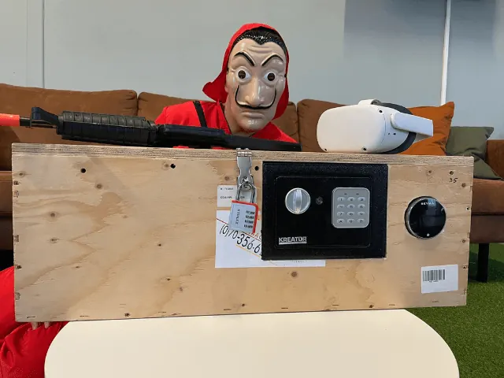
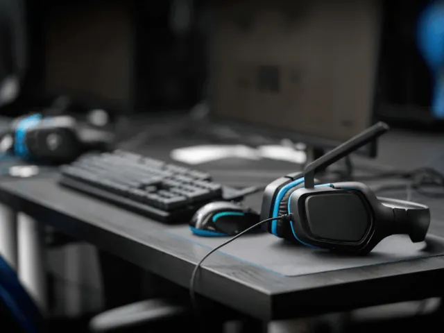
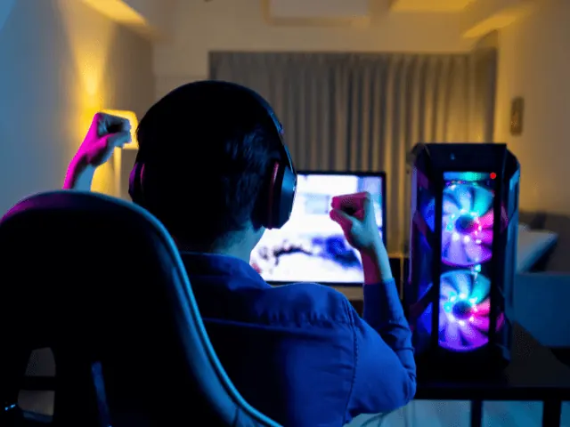
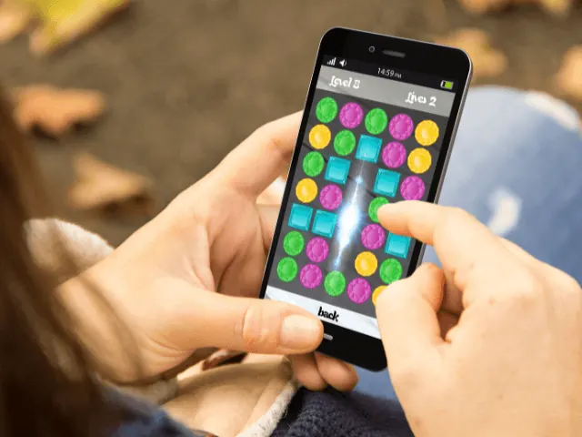
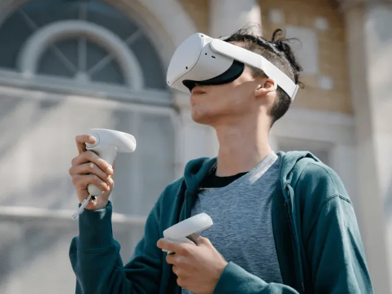

Partnerbijdrage
Hoe Ziet De Gamingmarkt eruit In 2023?
Gepubliceerd op 22 november 2022, bijgewerkt op 15 augustus 2023

De verwachte revolutie in de game markt kwam niet in 2021 en 2022. In zekere zin was het een periode van stagnatie. Veel titels kwamen veel te laat, en niet allemaal kregen ze een nieuwe console van de grote producers, zoals Sony en Microsoft. De pandemie dwarsboomde ook de plannen van de organisatoren van grote evenementen. We hebben het niet alleen over sport, zoals olympische spelen of esports-toernooien, maar ook over E3. Kijkers raken langzaam gewend aan het zitten op de virtuele tribunes…
Blijft de situatie bestaan? Of brengt 2023 in dit opzicht misschien wat veranderingen met zich mee? Het lijkt erop dat er licht aan het einde van de tunnel is. Veranderingen in het software distributiemodel, gedurfdere acties van makers van op blockchain gebaseerde oplossingen. Het ziet ernaar uit dat we beurzen en andere gaming evenementen weer vaker persoonlijk mogen bijwonen. Veranderingen kunnen ook van invloed zijn op de auteurs van de programma’s. Wij gingen op onderzoek uit wat de trends van 2023 zijn en wat we al kunnen spelen of doen in Nijmegen!
Verwachte trends op de gaming markt in 2023
Dus hoe zou dit jaar eruit kunnen zien? Laten we een paar trends bekijken die niet aan de aandacht van marktanalisten voor e-gaming zijn ontsnapt.
VR – ruimte voor spelers en game-ontwikkelaars
Virtual reality is een van de grote onvervulde dromen van programmeurs en gamers. Al tientallen jaren horen we over de op handen zijnde revolutie en het betreden van de virtuele wereld. Helaas waren er tot nu toe nog amper producten of diensten voor op de markt gekomen. Het lijkt er echter op dat 2022 op dit gebied enige veranderingen met zich mee heeft gebracht en 2023 zal dit zeker massaal omarmd gaan worden door de grote massa.

De groeiende populariteit van virtual reality
Volgens analisten zal de waarde van de VR-markt komend jaar 40 miljard dollar bedragen. Is dat veel? Gezien het feit dat we in 2016 een serieuze vertraging hadden in de hele VR-industrie, lijkt het nogal veel. Vanaf 2019 blijft de hele markt echter wel gestaag stijgen. Het wordt ook aangedreven door een gerelateerde industrie, Augmented Reality (kortweg AR). Samen zullen beide industrieën volgend jaar worden gewaardeerd op 440 miljard dollar. Hoewel VR slechts tien procent van dat bedrag uitmaakt, gebruiken al meer dan 300 miljoen mensen wereldwijd op de een of andere manier virtual reality. Deze trend zal steeds groter, breder en duidelijker worden.

Groeiende populariteit van esports onder jongeren
De markt, die vandaag 2.8 miljard dollar waard is, zal met 50% groeien en volgend jaar een waarde van meer dan 5.8 miljard dollar bereiken. E-sportbedrijven noteren aanzienlijke stijgingen op de Amerikaanse en Japanse beurzen, en toernooien trekken ook massa’s fans en toeschouwers.
Gaming-streamingservices breken records van populariteit
Twitch is slechts het topje van de ijsberg. De wereldwijde belangstelling voor esports wordt weerspiegeld in de groeiende populariteit van deze en andere gerelateerde diensten. Betaalde abonnementen en het snel genereren van inkomsten met inhoud die wordt aangeboden door steamers – inclusief vergoedingen voor de mogelijkheid om games in hoge definitie te volgen – zijn enkele van de redenen waarom deze markt snel groeit. Aanvankelijk begon de gratis service steeds meer aanpassingsopties te bieden voor de hele “ervaring”, inclusief talloze extra’s die zowel kijkers als auteurs kunnen kopen en aan bijdragen.
Blockchain – nog een hoop op e-gaming
Blockchain heeft een groeiende interesse onder makers en deelnemers in de e-gaming wereld. Wat winnen spelers en andere gebruikers ermee? Beveiliging, een hoger niveau van eerlijkheid, tokenisatie van items. Clubs en clans hebben een geweldige kans gevonden om zelf geld te verdienen, tot nu toe vooral de nichemerken, maar zeer binnenkort waarschijnlijk ook de mainstream merken, die dan juist groter kunnen groeien.
De technologie, die de wereld van Bitcoin heeft gegeven, wordt vrijwillig door spelers gekozen om transacties af te ronden en het verloop van de games te controleren. 2023 wordt zeker het jaar van blockchain games.
Aided reality – op de rand van een nieuwe revolutie
Hoewel VR nog steeds niet genoeg slagkracht heeft, dringt AR hard aan op de gaming markt. We spraken hierboven over het enorme financiële potentieel van deze technologie. Miljarden dollars worden door investeerders van Azië naar Amerika gepompt. Daar profiteren spelers van.

Streamingdiensten kunnen gaan concurreren met de consoles
Zijn de consolefabrikanten al in hun broek aan het plassen? Niet helemaal noodzakelijk. Maar het kan niet worden ontkend dat diensten zoals Steam een echt serieuze concurrentie voor hen zijn. Gebruikers kunnen het spel aanpassen aan hun eigen hardware-eisen en zijn dus ook niet gedwongen om regelmatig hardware-upgrades te doen. Consoles zijn nog steeds vrij duur en hebben enkele serieuze beperkingen. Het is dan ook zeker de moeite waard om naar deze rivaliteit te kijken, aangezien Sony en Microsoft niet op hun lauweren gaan rusten.
PC-gaming doet het nog steeds goed
Bovenstaande paragraaf leidt ons tot de volgende conclusie: Gamers die pc’s gebruiken (zowel in klassieke gevallen als de dure gaming-laptops) hebben zeker geen reden tot ongerustheid. In 2023 zal de waarde van de consolemarkt lager zijn dan vorig jaar. Tegelijkertijd wordt algemeen aangenomen dat de markt voor gaming-pc’s en -componenten sterk zal blijven, dit vanwege esports en het groeiende marktaandeel van gamestreamingdiensten.
Aanhoudende groei van de markt voor mobiele games
Samen met de groeiende kracht van smartphones is er een merkbare toename van het aandeel van de gehele gaming markt van de mobiele sector. Deze onvermijdelijke trend is in cijfers te zien: 2017 zorgde voor een toename van het aandeel van de mobiele gamingsector tot 48%, in 2023 zal dit naar verwachting 59% bereiken – de hoogste ooit.
Een van de redenen voor deze trend is de groeiende populariteit van gokspellen. Als gevolg van de pandemie hebben mobiele casino’s een ongekende groei doorgemaakt en liggen ze voor op land-based casino’s in 2022 in termen van inkomsten. Waarom gebeurt dit? Online gokautomaten staan garant voor geweldige emoties, geweldige graphics, snelle uitbetalingen van winsten (inclusief jackpots). Tegelijkertijd trekken ze dankzij eenvoudige mechanica massa’s spelers aan.

Het aandeel van China in de e-gamingmarkt zal in 2023 snel groeien
China is het Westen op veel manieren aan het inhalen. Een van de gebieden waar ze Europa en Amerika al hebben ingehaald, is de e-gamingsector. Het is momenteel de grootste markt ter wereld, verantwoordelijk voor bijna de helft van alle winst. De taart is groot, maar de Chinezen ontdekken een steeds groter stuk voor zichzelf dankzij een enorme mobiele gebruikersbasis en een groeiende middenklasse.
De metaverse en de videogamemarkt maken deel uit van dezelfde puzzel
De reguliere media merken de groeiende populariteit van de metaverse vandaag op. Een recent artikel in een Amerikaans zakenblad geeft ons een nogal optimistische visie op de metawereld – en niet noodzakelijk vanwege de recente beweringen van Mark Zuckerberg.
Het artikel zegt dat de metaverse spelers nu de meest opwindende ervaringen kan bieden. Geen wonder dat meer bedrijven deze technologie voor hun doeleinden proberen te gebruiken en er geld mee verdienen.
Het is echter nog steeds onduidelijk wat precies metaverse is. Is het gewoon een andere marketingschil? In een lastig te beschrijving van journalisten, waarbij ze de metaverse “een diverse virtuele ervaring” blijkt wel dat deze het in ieder geval nog niet helemaal snappen.

Wat kan je in Nijmegen vinden?
Voor de één is het een ver van je bed show en de andere speelt dagelijks online games. Lijkt het je leuk om e-gaming te doen of een virtual reality spel te spelen alleen om als bedrijfsuitje. Er zijn in Nijmegen diverse mogelijkheden die we hieronder zullen toelichten.
Planet Awesome
Planet Awesome is één van de aanbieders van een virtual reality escape games/rooms. Hun bieden een aantal verschillende VR escape rooms aan te weten ‘Escape the Lost Pyramid’, ‘Beyond Medusa’s Gate’ en ‘The Dagger of Time’. Deze VR games kan je spelen tussen de 1 en 6 personen. Mocht je met meer dan 6 personen zijn is het raadzaam om contact met Planet Awesome op te nemen.
Fundustry Nijmegen
Bij Fundustry kan je de VR Game La Casa de Papel spelen. Deze virtual reality game brengt jou en je team in een levensechte belevenis zoals je die ook van Netflix herkent. Je dient met je team de bank te overvallen om vervolgens succesvol te ontsnappen. Lukt het jullie om binnen de tijd dit voor elkaar te krijgen dan hebben jullie de kluis gekraakt en zijn daarmee echte boeven en dus de winnaar!
Enjoy VR Nijmegen
Ben je met een groep van 50 personen en wil je een bedrijfsuitje of kinderfeestje doen met virtual reality? Kom dan eens naar EnjoyVR in Nijmegen.
Hun bieden diverse VR arrangementen aan waarbij je de ene keer in een formule 1 auto stapt, op grote hoogte gaat manoeuvreren of lekker gaat knallen in het wilde westen. Door de grote diversiteit is er voor ieder wat wils.
Esports in Nijmegen
In nijmegen zijn in de loop der jaren al een aantal e-sport bedrijven, bedrijven of organisaties te vinden. Hieronder vindt je een overzicht
Studentenvereniging Doran’s in Nijmegen
Als eerste natuurlijk Dorans welke specifiek voor studenten is opgericht. Hoe tof is dat. Spellen zoals Super Smash Brothers, League of Legends en Rocket League worden hier dagelijks gespeeld. Met een jaarlijkse contributie van €35 kan je wekelijks trainen om je skills te verbeteren.
eDivisie N.E.C. Nijmegen
Voetbalvereniging NEC in Nijmegen speelt sinds een aantal jaren ook in de esport league van het voetbal. Joas Dost haalde vorig seizoen de KPN eDivisie Finals maar kon deze helaas niet omzetten in winst!
Stichting Esport Nederland
Lijkt het je leuk om eSport toernooien te organiseren, regels te maken en verder te promotren. Dan is je aansluiten bij Stichting ESports Nederland gamen wellicht iets voor jou. Op deze website zie je alle Esport organisaties die in Nederland te vinden zijn. Het hoofdkantoor bevind zich in Nijmegen.
Wanneer stap jij in de wereld van Virtual Reality?
Kortom; lijkt het je leuk om een keer een virtual reality game te spelen kan je terecht bij één van deze bedrijven. Het is ook een optie om bijvoorbeeld een Oculus Quest 2 te kopen en hier thuis mee aan de slag te gaan. De spellen worden steeds realistischer wat weer ten goede komt van de gameplay!
Kies de juiste computer
Wanneer je in het bezit bent van een virtual reality bril kan je ervoor kiezen om deze standalone te gebruiken of te koppelen aan een personal computer oftewel een pc. Kies je voor het laatste dan is het wel aan te raden dat je een goede pc hebt met voldoende processor kracht, een grote harde schijf, een videokaart en voldoende geheugen.
Hetzelfde geldt wanneer je aan esports doet. Speel je af en toe een spelletjes op de pc en hoef je niet zo nodig de laatste games te spelen kan je er ook voor kiezen om een pc te kopen die minder zwaar is.